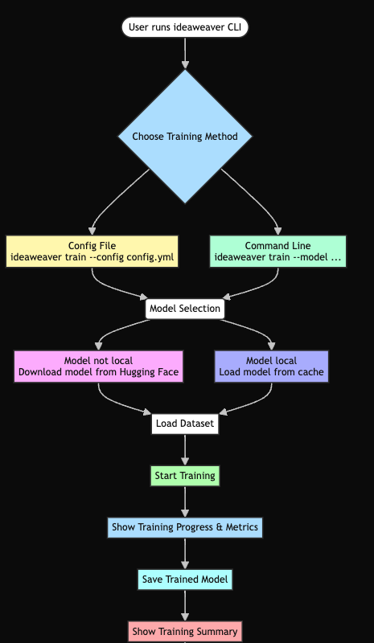
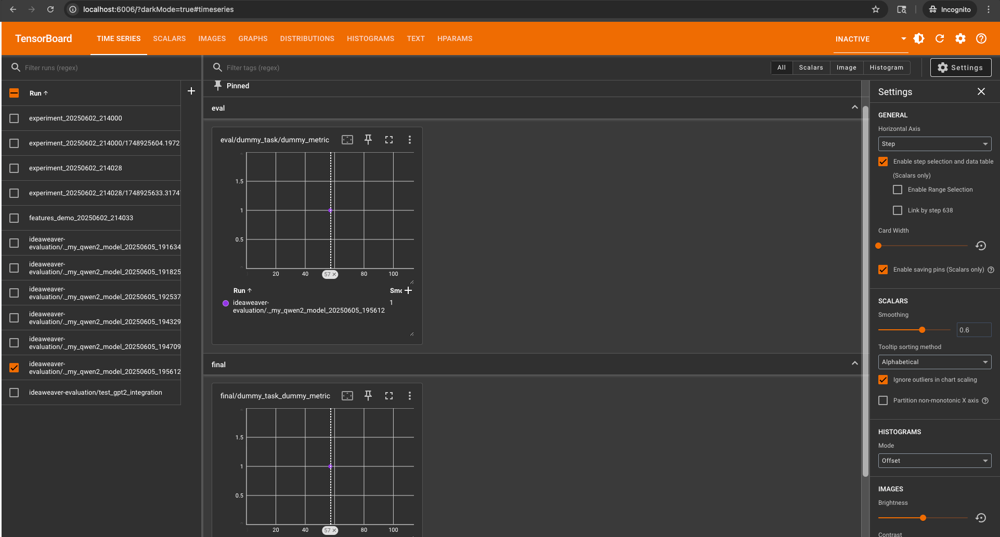
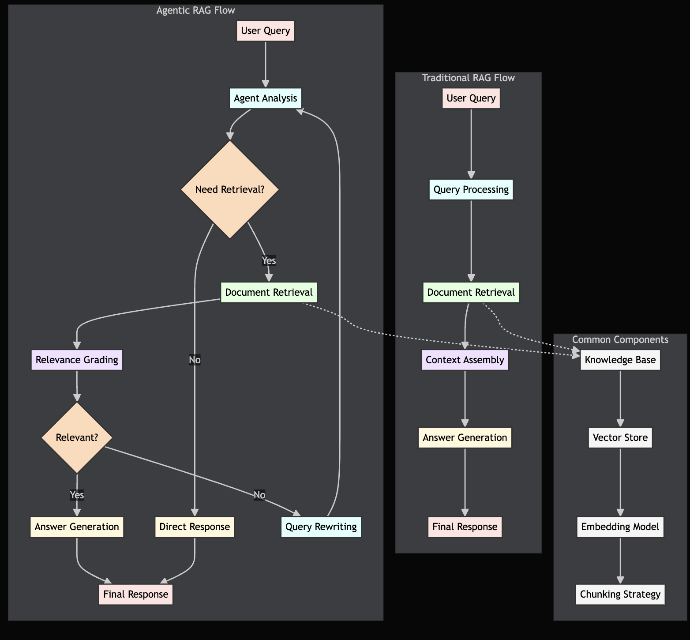
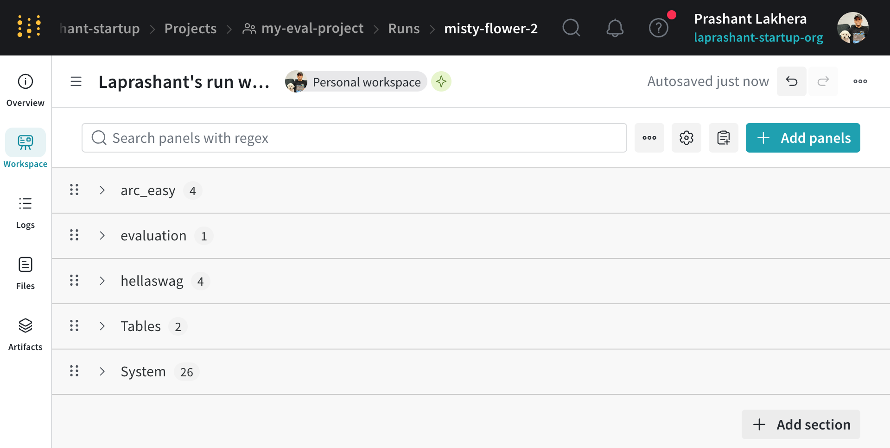
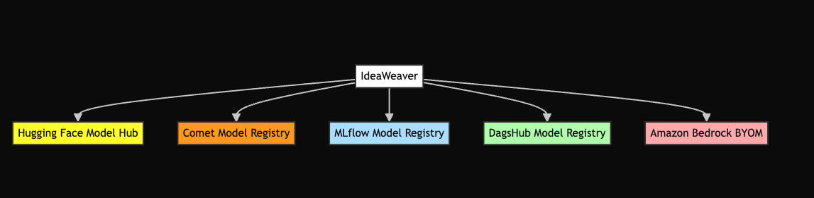
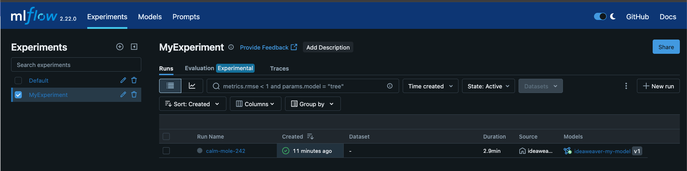
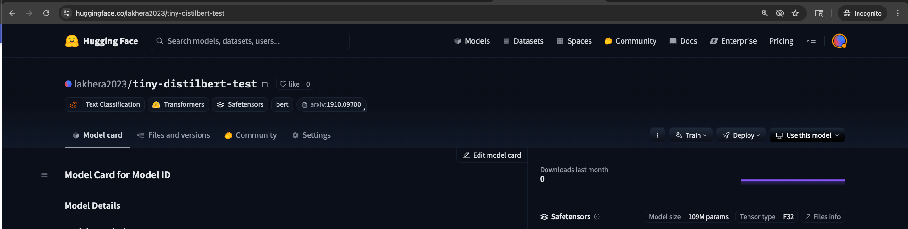
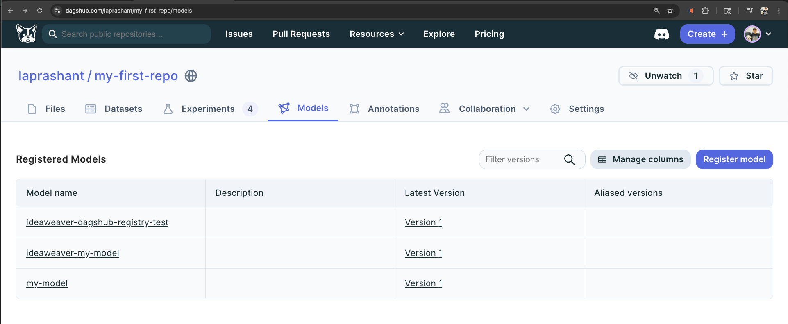
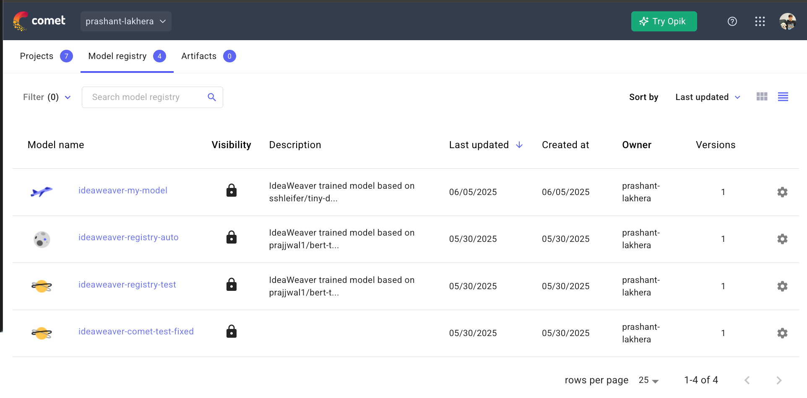

IdeaWeaver¶


A comprehensive CLI tool for AI model training, evaluation, and deployment with advanced RAG capabilities and MCP (Model Context Protocol) integration. Train, fine-tune, and deploy language models with enterprise-grade features. Visit: https://github.com/ideaweaver-ai-code/ideaweaver
✨ Key Features¶
One-Click Setup - Automated Python 3.12 environment with all dependencies
Advanced RAG - Traditional + Agentic RAG with multiple vector stores
Flexible Training - LoRA, QLoRA, and full fine-tuning support
Comprehensive Evaluation - Built-in benchmarks + custom metrics
MCP Integration - GitHub, Terraform and AWS connectors
Multi-Agent Workflows - CrewAI pipeline support
Configuration Validation - YAML validation and schema checking
NOTE:
Python Version Compatibility¶
We are currently using Python 3.12 for the
ideaweaverproject because some of the tools and dependencies we rely on do not yet support Python 3.13. Once those tools officially support Python 3.13, we plan to upgrade the project accordingly.
🚀 Quick Start¶
Installation¶
# One-line installation
curl -LsSf https://raw.githubusercontent.com/ideaweaver-ai-code/ideaweaver/main/setup_environments.sh | sh
# Or traditional installation
git clone https://github.com/ideaweaver-ai-code/ideaweaver.git
cd ideaweaver
chmod +x setup_environments.sh
./setup_environments.sh
Environment Setup¶
⚠️ Important: IdeaWeaver requires Python 3.12. Make sure you have Python 3.12 installed before proceeding.
-
Check Python Version
-
Activate the Environment
-
Verify Installation
Expected Output:
Usage: ideaweaver [OPTIONS] COMMAND [ARGS]...
IdeaWeaver Model Training CLI - A comprehensive tool for AI model training,
evaluation, and deployment.
Features include LoRA/QLoRA fine-tuning, RAG systems, MCP integration, and
enterprise-grade model management. For detailed documentation and examples,
visit: https://github.com/ideaweaver-ai-code/ideaweaver
Options:
--help Show this message and exit.
Commands:
agent Intelligent agent workflows for creative and analytical tasks.
download Download a model from Hugging Face Hub
evaluate Evaluate a model using lm-evaluation-harness with...
finetune Supervised fine-tuning commands with LoRA, QLoRA, and full...
list-tasks List all available evaluation tasks from lm-evaluation-harness
mcp Model Context Protocol (MCP) integration commands
rag RAG (Retrieval-Augmented Generation) commands
train Train a model with AutoTrain Advanced.
validate Validate a configuration file
If you see the help menu, your environment is set up correctly!
Note: If you need to install Python 3.12: - macOS:
brew install python@3.12- Ubuntu/Debian:sudo apt install python3.12
Core Usage: Step-by-Step¶
1. Download a Model¶
Download models from Hugging Face Hub for local use or further training.
Tip: Set your Hugging Face token for private/gated models.
2. Validate Configuration¶
Check your YAML config or dataset before training to catch errors early.
3. Model Training¶
Train a model using a config file or command-line options. Supports LoRA, QLoRA, and full fine-tuning.
# Config-based training
ideaweaver train --config configs/config.yml
# Or command-line training
ideaweaver train --model google/bert_uncased_L-2_H-128_A-2 --dataset ./data/train.csv --task text_classification --epochs 3 --batch-size 8

4. Model Evaluation¶
Evaluate your trained or downloaded models on standard or custom benchmarks.

5. Agent Workflows¶
Use intelligent agents for creative writing, research, social media, and more.

6. Finetuning¶
Fine-tune models with LoRA, QLoRA, or full parameter updates for your data.
ideaweaver finetune lora --model microsoft/DialoGPT-medium --dataset ./data.json --output-dir ./fine-tuned-model
7. RAG (Retrieval-Augmented Generation)¶
Build and query knowledge bases with advanced retrieval and hybrid search.
ideaweaver rag create-kb --name mykb
ideaweaver rag ingest --kb mykb --source ./docs/
ideaweaver rag query --kb mykb --question "What is RAG?"
8. MCP (Model Context Protocol) Integration¶
Connect to external tools and services (GitHub, AWS, etc.) for advanced workflows.
🏗️ Architecture¶
System Overview¶
Agent Architecture¶
Figure: Relationship between IdeaWeaver, CrewAI, and specialized generators.
RAG Capabilities Comparison¶
| Feature | Traditional RAG | Agentic RAG | IdeaWeaver Advantage |
|---|---|---|---|
| Query Processing | Direct retrieval | Multi-step reasoning | Both approaches supported |
| Context Awareness | Single-turn | Multi-turn conversations | Persistent context tracking |
| Tool Integration | Limited | Extensive tool use | MCP protocol integration |
| Self-Correction | None | Built-in reflection | Advanced error handling |
| Scalability | Vector search only | Dynamic planning | Hybrid approach |
🔧 Core Components¶
Model Training & Fine-tuning¶
- LoRA/QLoRA: Memory-efficient fine-tuning for large models
- Full Parameter: Complete model retraining for maximum customization
- Multi-GPU: Distributed training support with automatic scaling
- Experiment Tracking: MLflow, Weights & Biases, Comet integration
Fine-tuning Examples¶
# Full fine-tuning with DialoGPT
ideaweaver finetune full \
--model microsoft/DialoGPT-small \
--dataset datasets/instruction_following_sample.json \
--output-dir ./test_full_basic \
--epochs 5 \
--batch-size 2 \
--gradient-accumulation-steps 2 \
--learning-rate 5e-5 \
--max-seq-length 256 \
--gradient-checkpointing \
--verbose
Example output:
🚀 Supervised Fine-Tuner initialized
Model: microsoft/DialoGPT-small
Method: full
Task: instruction_following
🔧 Setting up model and tokenizer...
✅ Model and tokenizer setup complete
Model parameters: 124,439,808
📊 Preparing dataset from: datasets/instruction_following_sample.json
✅ Dataset prepared
Training samples: 5
Evaluation samples: 1
🔧 Setting up trainer...
✅ Trainer setup complete
🚀 Starting fine-tuning...
{'loss': 26.2043, 'grad_norm': nan, 'learning_rate': 1.5076844803522922e-06, 'epoch': 5.0}
{'train_runtime': 13.3988, 'train_samples_per_second': 1.866, 'train_steps_per_second': 0.746, 'train_loss': 26.204254150390625, 'epoch': 5.0}
✅ Fine-tuning completed!
📁 Model saved to: ./test_full_basic
📊 Evaluating model...
{'eval_loss': nan, 'eval_runtime': 0.1933, 'eval_samples_per_second': 5.175, 'eval_steps_per_second': 5.175, 'epoch': 5.0}
✅ Evaluation complete
eval_loss: nan
eval_runtime: 0.1933
eval_samples_per_second: 5.1750
eval_steps_per_second: 5.1750
epoch: 5.0000
✅ Full fine-tuning completed!
📁 Model saved to: ./test_full_basic
Listing Fine-tuned Models¶
Example output:
📁 Fine-tuned models found:
==================================================
📂 .
📂 cli-final-test
📂 cli-final-test/checkpoint-5
📂 comet-clean
📂 comet-clean/checkpoint-5
📂 comet-experiment
📂 comet-experiment/checkpoint-5
RAG Systems¶
- Vector Stores: Chroma, Qdrant, FAISS with automatic optimization
- Embeddings: Sentence Transformers, OpenAI, custom models
- Agentic RAG: Multi-step reasoning with tool integration
- Document Processing: PDF, DOCX, TXT, Markdown with smart chunking
MCP Integration¶
- GitHub: Repository analysis, issue tracking, code reviews
- AWS: S3, Lambda, SageMaker integration for cloud deployment
Evaluation & Benchmarking¶
- Standard Tasks: HellaSwag, ARC, WinoGrande, MMLU, and more
- Custom Metrics: Domain-specific evaluation frameworks
- Model Comparison: Side-by-side performance analysis
- RAG Evaluation: RAGAS framework for retrieval assessment
📊 Example Workflows¶
Complete Model Development Pipeline¶
# 1. Setup and Data Preparation
ideaweaver rag init --vector-store chroma
ideaweaver rag add-documents --path ./training-docs/
# 2. Generate Training Data
ideaweaver rag query "Generate training examples for customer service" --save-context
# 3. Model Fine-tuning
ideaweaver finetune lora \
--model microsoft/DialoGPT-medium \
--dataset ./generated-training-data \
--output-dir ./fine-tuned-model
# 4. Evaluation & Comparison
ideaweaver evaluate \
--model ./fine-tuned-model \
--tasks hellaswag,arc_easy,custom-eval \
--output evaluation-results.json
Multi-Agent Content Generation¶
# Setup CrewAI workflow
ideaweaver agent generate-storybook \
--topic "AI model training best practices" \
--agents researcher,writer,reviewer \
--output training-guide.md
🌟 Enterprise Features¶
📈 Performance Benchmarks¶
Training Speed Improvements¶
- LoRA Fine-tuning: 3-5x faster than full parameter training
- QLoRA: 50% memory reduction with minimal quality loss
RAG System Performance¶
- Query Speed: <200ms average response time
- Accuracy: 15-25% improvement over baseline RAG
- Scalability: Handles 10M+ documents efficiently
🚀 Getting Started¶
- Installation Guide - Setup in under 5 minutes
- Quick Start - Your first model in 15 minutes
- Configuration - Customize for your needs
- CLI Reference - Complete command documentation
📚 Documentation¶
Getting Started¶
- Installation - Complete setup guide
- Quick Start - Essential commands and workflows
- Configuration - Customize your setup
Tutorials¶
- Model Training - LoRA, QLoRA, and full fine-tuning
- RAG Systems - Build intelligent retrieval systems
- MCP Integration - Connect external services
Reference¶
- CLI Commands - Complete command reference
- Configuration Files - YAML configuration guide
Guides¶
- Enterprise RAG - Production RAG deployments
- Fine-tuning Best Practices - Advanced training techniques
🤝 Community¶
- Contributing - Join our development community
- Guidelines - Code standards and best practices
- Support - Get help and report issues
- Roadmap - Upcoming features and improvements
📄 License¶
This project is licensed under the MIT License - see the LICENSE file for details.
CLI Usage Examples¶
Model Training¶
# Config-based training
ideaweaver train --config configs/config.yml --verbose
# Command line training
ideaweaver train --model google/bert_uncased_L-2_H-128_A-2 \
--dataset ./data/train.csv \
--task text_classification \
--epochs 3 --batch-size 8
# AWS Bedrock deployment training
ideaweaver train --model meta-llama/Llama-2-7b-hf \
--dataset ./data/train.csv \
--push-to-bedrock \
--bedrock-model-name my-llama-model \
--bedrock-s3-bucket my-bedrock-bucket \
--bedrock-role-arn arn:aws:iam::123456789012:role/BedrockImportRole
TensorBoard UI Example¶
Weights & Biases (wandb) Online Example¶
WANDB_MODE=online WANDB_API_KEY=XXXXXX ideaweaver evaluate ./my-qwen2-model \
--tasks hellaswag,arc_easy \
--batch-size 2 \
--output-path ./evaluation_results_wandb \
--generate-report \
--report-to wandb \
--wandb-project my-eval-project \
--limit 2 \
--verbose
Example output:
🚀 Starting LLM evaluation for model: ./my-qwen2-model
📊 Tracking with: wandb
✅ Local model found: ./my-qwen2-model
wandb: Currently logged in as: laprashant (laprashant-startup) to https://api.wandb.ai. Use `wandb login --relogin` to force relogin
wandb: Tracking run with wandb version 0.19.11
wandb: Run data is saved locally in /Users/plakhera/Documents/model-registry/wandb/run-20250605_201404-irki0njw
wandb: Run `wandb offline` to turn off syncing.
wandb: Syncing run autumn-shadow-1
wandb: ⭐️ View project at https://wandb.ai/laprashant-startup/my-eval-project
wandb: 🚀 View run at https://wandb.ai/laprashant-startup/my-eval-project/runs/irki0njw
✅ Wandb initialized: https://wandb.ai/laprashant-startup/my-eval-project/runs/irki0njw
📊 Starting evaluation on tasks: hellaswag, arc_easy
📁 Output path: ./evaluation_results_wandb
🔧 Running command: lm_eval --model hf --model_args pretrained=./my-qwen2-model --tasks hellaswag,arc_easy --device auto --batch_size 2 --output_path ./evaluation_results_wandb --log_samples --limit 2 --wandb_args project=my-eval-project
✅ Evaluation completed in 117.12 seconds
📋 Evaluation output:
hf (pretrained=./my-qwen2-model), gen_kwargs: (None), limit: 2.0, num_fewshot: None, batch_size: 2
| Tasks |Version|Filter|n-shot| Metric | |Value| |Stderr|
|---------|------:|------|-----:|--------|---|----:|---|-----:|
|arc_easy | 1|none | 0|acc |↑ | 0|± | 0|
| | |none | 0|acc_norm|↑ | 1|± | 0|
|hellaswag| 1|none | 0|acc |↑ | 0|± | 0|
| | |none | 0|acc_norm|↑ | 0|± | 0|
⚠️ No results.json found, creating basic results structure
✅ Results logged to Weights & Biases
✅ Evaluation completed successfully!
📄 Evaluation report saved to: evaluation_report_._my-qwen2-model.md
📄 Report saved to: evaluation_report_._my-qwen2-model.md
📊 Evaluation Summary:
dummy_task - dummy_metric: 1.0000
wandb:
wandb: Run history:
wandb: dummy_task_dummy_metric ▁
wandb: evaluation_duration ▁
wandb: num_tasks ▁
wandb:
wandb: Run summary:
wandb: dummy_task_dummy_metric 1
wandb: evaluation_duration 117.1197
wandb: num_tasks 2
wandb:
wandb: 🚀 View run autumn-shadow-1 at: https://wandb.ai/laprashant-startup/my-eval-project/runs/irki0njw
wandb: ⭐️ View project at: https://wandb.ai/laprashant-startup/my-eval-project
wandb: Synced 5 W&B file(s), 1 media file(s), 2 artifact file(s) and 0 other file(s)
wandb: Find logs at: ./wandb/run-20250605_201404-irki0njw/logs
✅ Wandb run finished
/opt/homebrew/Cellar/python@3.12/3.12.10_1/Frameworks/Python.framework/Versions/3.12/lib/python3.12/tempfile.py:940: ResourceWarning: Implicitly cleaning up <TemporaryDirectory '/var/folders/zh/6p21kgbs2p192mpqm1csfd3r0000gn/T/tmpr6z8m8xf'>
_warnings.warn(warn_message, ResourceWarning)
wandb UI Example¶

The evaluation command provides comprehensive model assessment with: - Integration with TensorBoard for visualization - Weights & Biases (wandb) tracking - Detailed performance metrics for each task - Automatic report generation - Offline and online logging options
For more details on evaluation options and available tasks, see the Evaluation Guide.
Agent Commands¶
# Check LLM status
ideaweaver agent check-llm
# Storybook generation
ideaweaver agent generate_storybook --theme "brave little mouse" --target-age "3-5"
# Research and writing
ideaweaver agent research_write --topic "AI in healthcare"
# LinkedIn post creation
ideaweaver agent linkedin_post --topic "AI trends in 2025"
# Travel planning
ideaweaver agent travel_plan --destination "Tokyo" --duration "7 days" --budget "$2000-3000"
# Stock analysis
ideaweaver agent stock_analysis --symbol AAPL
Example output for check-llm:
🔍 Checking for Ollama availability...
✅ Ollama is available! Using model: phi3:mini
📋 Available models: deepseek-r1:1.5b, phi3:mini
✅ Created CrewAI LLM wrapper successfully
✅ LLM Status:
Provider: ollama
Model: phi3:mini
Status: Connected and ready
MLflow Model Registration Example¶
To track experiments and register models with MLflow, follow these steps:
ideaweaver Integrations¶

1. Start the MLflow server¶
source ideaweaver-env/bin/activate
mlflow server --host 127.0.0.1 --port 5000 --backend-store-uri sqlite:///mlflow.db
2. Train and register a model¶
ideaweaver train \
--model bert-base-uncased \
--dataset ./datasets/training_data.csv \
--track-experiments \
--mlflow-uri http://127.0.0.1:5000 \
--mlflow-experiment "MyExperiment" \
--register-model
Example Output¶
🤗 Using model: bert-base-uncased
📊 Experiment tracking enabled
🏷️ Model registration enabled
🚀 Starting model training...
2025/06/05 11:08:39 INFO mlflow.tracking.fluent: Experiment with name 'MyExperiment' does not exist. Creating a new experiment.
...
MLflow UI Example¶

You can view your run and registered model in the MLflow UI at http://127.0.0.1:5000.
Pushing a Model to Hugging Face Hub¶
To push a small model to Hugging Face for testing, use a tiny model like sshleifer/tiny-distilbert-base-cased:
source ideaweaver-env/bin/activate
ideaweaver train \
--model sshleifer/tiny-distilbert-base-cased \
--dataset ./datasets/training_data.csv \
--push-to-hub \
--hub-model-id <your-username>/<your-model-name> \
--hf-token <your-hf-token>
- Replace
<your-username>/<your-model-name>with your Hugging Face username and desired model name. - Replace
<your-hf-token>with your Hugging Face access token. - For instructions on creating a token, see the Hugging Face token documentation.
Example Output¶
🤗 Using model: sshleifer/tiny-distilbert-base-cased
🚀 Will push to Hub: <your-username>/<your-model-name>
🚀 Starting model training...
README.md: 100%|██████████████████████████████████████████████████████████████████████████| 5.17k/5.17k [00:00<00:00, 5.19MB/s]
model.safetensors: 100%|████████████████████████████████████████████████████████████████████| 438M/438M [00:41<00:00, 10.5MB/s]
✅ Model successfully pushed to: https://huggingface.co/<your-username>/<your-model-name>
============================================================
🎉 TRAINING SUMMARY
============================================================
📂 Model Path: ./my-model
🤖 Base Model: sshleifer/tiny-distilbert-base-cased
📊 Dataset: ./autotrain_projects/my-model
📊 KEY PERFORMANCE METRICS
----------------------------------------
📉 Final Train Loss: 1.0997
🎯 Overall Accuracy: 40.0%
============================================================
✨ Training completed successfully! Model is ready for use.
============================================================
✅ Training completed successfully!
📁 Model saved to: ./my-model
📤 Pushing to Hugging Face Hub...
Hugging Face UI Example¶

Pushing a Model to DagsHub¶
To push a small model to DagsHub for testing, use a tiny model like sshleifer/tiny-distilbert-base-cased:
source ideaweaver-env/bin/activate
ideaweaver train \
--model sshleifer/tiny-distilbert-base-cased \
--dataset ./datasets/training_data.csv \
--mlflow-uri https://dagshub.com/<your-username>/<your-repo>.mlflow \
--dagshub-token <your-dagshub-token> \
--dagshub-repo-owner <your-username> \
--dagshub-repo-name <your-repo>
- Replace
<your-username>,<your-repo>, and<your-dagshub-token>with your DagsHub details. - Create an access token in the tokens settings menu.
- Models logged with MLflow will appear in the DagsHub UI under "Experiments" and "Models" automatically.
- For more info, see DagsHub.
Example Output¶
🤗 Using model: sshleifer/tiny-distilbert-base-cased
🚀 Starting model training...
============================================================
🎉 TRAINING SUMMARY
============================================================
📂 Model Path: ./my-model
🤖 Base Model: sshleifer/tiny-distilbert-base-cased
📊 Dataset: ./autotrain_projects/my-model
📊 KEY PERFORMANCE METRICS
----------------------------------------
📉 Final Train Loss: 1.0986
🎯 Overall Accuracy: 20.0%
============================================================
✨ Training completed successfully! Model is ready for use.
============================================================
✅ Training completed successfully!
📁 Model saved to: ./my-model
DagsHub UI Example¶
Once your model is registered, you can view it in the DagsHub Model Registry UI:

You will see your registered models listed, as shown above.
Comet Model Registry Example¶
You can use Comet to track experiments and register models directly from IdeaWeaver.
Training and Registering a Model with Comet¶
First, activate your environment:
Then run:
ideaweaver train \
--model sshleifer/tiny-distilbert-base-cased \
--dataset ./datasets/training_data.csv \
--comet-api-key <your-comet-api-key> \
--comet-project my-model-project \
--track-experiments --register-model
- Replace the API key and project name as needed.
Example Output¶
🤗 Using model: sshleifer/tiny-distilbert-base-cased
📊 Experiment tracking enabled
🏷️ Model registration enabled (MLflow/DagsHub/Comet)
🚀 Starting model training...
COMET INFO: Experiment is live on comet.com https://www.comet.com/prashant-lakhera/my-model-project/4ea3ce89906d4067abbfe81c4e924a6b
🏷️ Model registered in Model Registry: ideaweaver-my-model
🤖 Model pushed to Comet ML
Successfully registered model 'ideaweaver-my-model'.
Created version '1' of model 'ideaweaver-my-model'.
🏷️ Model registered in Model Registry: ideaweaver-my-model
============================================================
🎉 TRAINING SUMMARY
============================================================
📂 Model Path: ./my-model
🤖 Base Model: sshleifer/tiny-distilbert-base-cased
📊 Dataset: ./autotrain_projects/my-model
📊 KEY PERFORMANCE METRICS
----------------------------------------
📉 Final Train Loss: 1.0986
🎯 Overall Accuracy: 40.0%
============================================================
✨ Training completed successfully! Model is ready for use.
============================================================
COMET INFO: ---------------------------------------------------------------------------------------
COMET INFO: Comet.ml Experiment Summary
COMET INFO: ---------------------------------------------------------------------------------------
COMET INFO: Data:
COMET INFO: display_summary_level : 1
COMET INFO: name : ideaweaver-my-model
COMET INFO: url : https://www.comet.com/prashant-lakhera/my-model-project/4ea3ce89906d4067abbfe81c4e924a6b
COMET INFO: Metrics:
COMET INFO: eval_f1_macro : 0.19047619047619047
COMET INFO: eval_loss : 1.098659634590149
COMET INFO: final_train_loss : 1.0986
COMET INFO: overall_accuracy : 0.4
COMET INFO: train_runtime : 2.6494
COMET INFO: train_samples_per_second : 21.515
COMET INFO: Others:
COMET INFO: Name : ideaweaver-my-model
COMET INFO: Parameters:
COMET INFO: base_model : sshleifer/tiny-distilbert-base-cased
COMET INFO: batch_size : 8
COMET INFO: epochs : 3
COMET INFO: learning_rate : 2e-05
COMET INFO: max_seq_length : 128
COMET INFO: task : text_classification
COMET INFO: Uploads:
COMET INFO: asset : 5 (1.07 MB)
COMET INFO: environment details : 1
COMET INFO: filename : 1
COMET INFO: installed packages : 1
COMET INFO: model-element : 67 (2.02 MB)
COMET INFO: source_code : 2 (41.60 KB)
COMET INFO:
COMET INFO: Successfully registered 'ideaweaver-my-model', version '1.0.0' in workspace 'prashant-lakhera'
COMET INFO: Please wait for assets to finish uploading (timeout is 10800 seconds)
COMET INFO: Still uploading 52 file(s), remaining 1.14 MB/1.27 MB
✅ Training completed successfully!
📁 Model saved to: ./my-model
Comet UI Example¶
Once your model is registered, you can view it in the Comet Model Registry UI:

You will see your registered models listed, as shown above.
- Comet Model Registry Documentation
- Create an API keys API keys
Ready to transform your AI workflow? Get started now or join our community! 🚀
AWS Bedrock Bring-Your-Own-Model (BYOM) Deployment¶
Below are the must-haves before Amazon Bedrock will accept a "bring-your-own-model" (Custom Model Import) job.
1. Prepare the model artifacts¶
| Requirement | Why it matters |
|---|---|
| Supported architecture: Llama 2 / 3 family, Mistral, Mixtral, Flan-T5, GPT-BigCode, Qwen 2(+ VL/2.5) | Bedrock recognises only these model configs at import time. (docs.aws.amazon.com) |
| Weights ≤ 200 GB for text, ≤ 100 GB for multimodal | Larger checkpoints are rejected. (docs.aws.amazon.com) |
| Hugging Face format, stored in S3 * .safetensors weights (FP32, FP16 or BF16 only; no quantised weights)* config.json* tokenizer.json / tokenizer.model / tokenizer_config.json |
Bedrock's import job reads these exact filenames. (docs.aws.amazon.com) |
| Transformers 4.45.2 used when you fine-tune or convert the model | The import job validates the version tag in config.json. (docs.aws.amazon.com) |
| Context length < 128 k tokens | Upper bound enforced at import. (docs.aws.amazon.com) |
| Licence compliance | You must have the rights to run the model in Bedrock. (docs.aws.amazon.com) |
2. Set-up inside AWS¶
| Item | Details |
|---|---|
| Supported Regions | us-east-1, us-west-2, eu-central-1 for import & inference today. (docs.aws.amazon.com) |
| S3 bucket in the same Region | Upload the HF files; if the bucket or its KMS key is in another account, grant Bedrock GetObject / ListBucket and decrypt permissions. (docs.aws.amazon.com) |
| IAM service role (or let the console create one) with: • sts:AssumeRole trust for bedrock.amazonaws.com• Minimal s3:GetObject, s3:ListBucket on your model path |
Bedrock assumes this role during the import job. (docs.aws.amazon.com) |
| Bedrock permissions for the user/CI role running the import | bedrock:CreateModelImportJob, bedrock:GetModelImportJob, bedrock:ListImportedModels, etc. |
| Provisioned or On-Demand throughput | After import you still need throughput capacity before you can call InvokeModel. |
3. (Optional but recommended) security & network controls¶
- KMS encryption for the S3 objects and for the model once stored in Bedrock. Bedrock can use your CMK if you grant it
kms:Decryptandkms:GenerateDataKey. (docs.aws.amazon.com) - VPC protection – run the import job and subsequent inference inside a VPC endpoint to keep all traffic off the public internet. (docs.aws.amazon.com)
- Cross-account access – if the S3 bucket lives in a different AWS account, add a bucket policy that allows the Bedrock service principal in your account to read the objects. (docs.aws.amazon.com)
Quick pre-flight checklist¶
- ✅ Convert / fine-tune with
transformers==4.45.2, save as Safetensors. - ✅ Zip the HF files (< 200 GB) into an S3 bucket in
us-east-1,us-west-2, oreu-central-1. - ✅ Create or let Bedrock create an IAM role with the S3 read policy & Bedrock trust.
- ✅ Run CreateModelImportJob (console, CLI or SDK) pointing at the S3 URI.
- ✅ After
Completedstatus, purchase Provisioned Throughput (or use On-Demand) and callInvokeModel.
With those pieces in place your custom checkpoint will land in Bedrock and be callable just like any foundation model in the service.
Example Command¶
source ideaweaver-env/bin/activate
ideaweaver train \
--model Qwen/Qwen1.5-0.5B \
--dataset ./datasets/training_data.csv \
--push-to-bedrock \
--bedrock-model-name my-qwen2-model \
--bedrock-s3-bucket aws-bedrock-ideaweaver-bucket \
--bedrock-role-arn arn:aws:iam::696364089559:role/bedrock-admin-role \
--batch-size 1 \
--verbose
Example Output¶
🤗 Using model: Qwen/Qwen1.5-0.5B
☁️ Will deploy to AWS Bedrock:
Model name: my-qwen2-model
S3 bucket: aws-bedrock-ideaweaver-bucket
Region: us-east-1
🚀 Starting model training...
✅ Model successfully imported to AWS Bedrock!
🎯 Bedrock Model ID: my-qwen2-model
💾 Bedrock info saved to: ./my-qwen2-model/bedrock_info.json
✅ Training completed successfully!
📁 Model saved to: ./my-qwen2-model